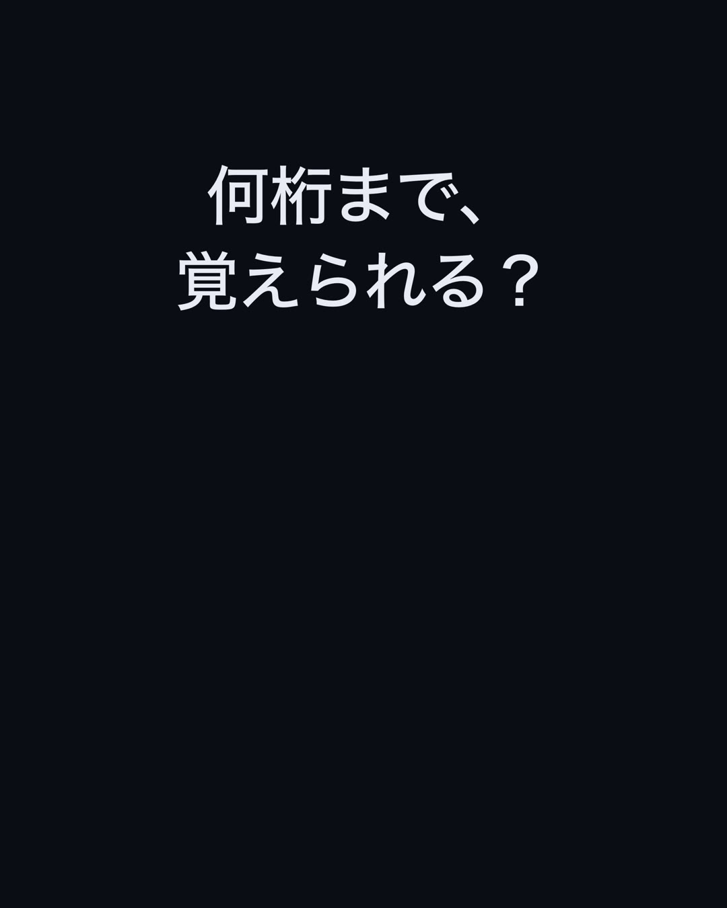
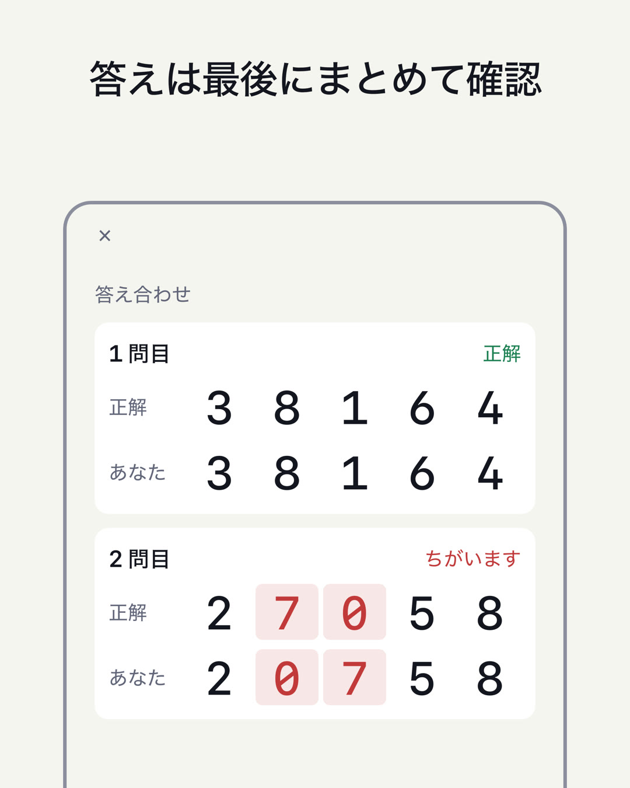

数字記憶テスト / DIGIT SPAN
何桁まで、覚えられる？
数字が1つずつ表示されます。消えたら、出た順に打ちます。正解するたびに1桁ずつ増えていき、何桁まで覚えられるか（数字スパン）を測る、短期記憶のテストです。
近日公開（iPhone・無料）

使い方
- 数字を見る1つずつ表示されます（初期値は1つ0.7秒）。
- 覚えた順に打つ「逆から」では、出た順の反対に打ちます。
- 次の桁へ正解なら1桁増えます。同じ桁で2回まちがえたら終了。そこまでが、あなたの数字スパンです。
特徴
- 「そのまま」（順唱）と「逆から」（逆唱）の2つのテスト。自己ベストを別々に記録します。「逆から」は頭の中で並べ替えるので、ワーキングメモリも使います
- まちがえたときは、正解とあなたの答えを並べて、ずれた桁に色が付きます
- 成績の画面で、日ごとの自己ベストの推移を見られます
- 開始の桁数（2〜12桁）と、数字を見せる長さ（0.3〜2.0秒）を変えられます
- 数字の出し方は「画面」「読み上げ」「両方」から選べます。読み上げだけにすると、耳で覚えるテストになります
- 数字はすべて等幅。装飾のない、計器のような画面です
- 記録は端末の中だけに保存。ログイン不要
一般的な成人の目安は、そのまま（順唱）で 7±2 桁といわれています（Miller, 1956）。本アプリは記憶の状態を確かめるためのもので、医療上の診断や、記憶力の向上を目的としたものではありません。
姉妹アプリ
広告について
ホーム・結果・成績の画面の下と、結果から「もう一度」を押したとき（2回に1回）に広告が表示されます。数字を見ている間、答えを打っている間、判定の間には表示しません。